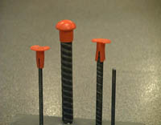
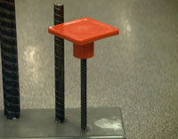
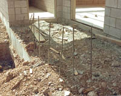

Am
I In Danger?
Unguarded
protruding steel reinforcing bars are hazardous. Even if you just
stumble onto an unguarded rebar you can impale yourself, resulting
in serious internal injuries or death.
How Do
I Avoid Hazards?
- Guard
all protruding ends of steel rebar with rebar caps or wooden troughs, or
- Bend rebar so exposed ends are no longer upright.
- When employees are working at any height above exposed rebar, fall
protection/ prevention is the first line of defense against
impalement.
Rebar Caps
The
OSHA Standard requires that rebar "be guarded to eliminate the
hazard of impalement." Not all guards provide that level of protection. In some circumstances, the force of a fall can cause
rebar to push clear through a plastic cap and still impale a worker,
or the worker can be impaled by the rebar and the cap together.
|

|
|

|
Only rebar caps designed to provide impalement
protection, such as those containing steel reinforcement, should be
used.
|
|

These rebar should be bent over or protected with caps so that a worker would not
be injured by falling on them.
Construction
Worker Dies
|